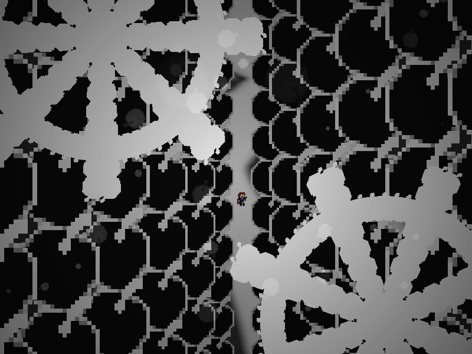
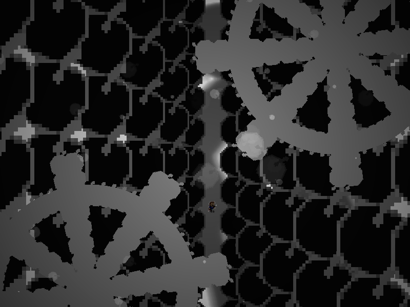

| creator | segment | label | jump |
|---|---|---|---|
| NN | 2:46.20~2:54.60 | R | infinite |
反復型の弾幕です。
ジャンプによる縦方向の移動のみを用いて、画面上部から周期的に出現する歯車状弾幕の回転に対応することを目的としています。
なお、2:49.60、2:51.20、2:52.80において画面が明るくなる瞬間（fig.12-1.1）において弾幕全体が加速することに注意が必要です。
